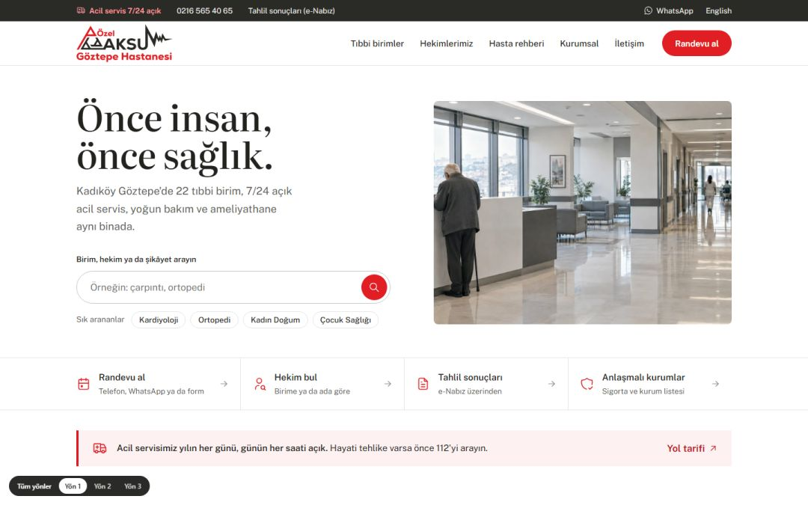

Yön 1Beyaz ve tek kırmızı
Mayo Clinic ve Acıbadem çizgisi
Ana sayfa arama kutusuyla açılır: birim, hekim ya da şikâyet. Kırmızı yalnız düğme, bağlantı ve acil uyarısında. Başlıklar serif, gövde sans; hap düğmeler, gölge yok.
Literata + Public Sans